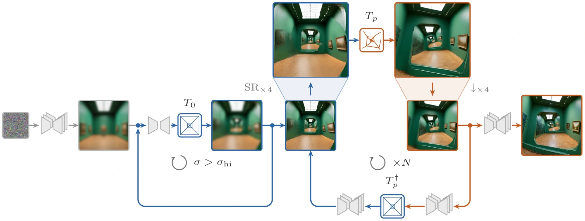

Abstract
“I don’t think I have ever done anything as peculiar in my life. Among other things, it shows a young man looking with interest at a print on the wall of an exhibition that features himself. How can this be? Perhaps I am not far removed from Einstein’s curved universe.”
So wrote M. C. Escher about his 1956 lithograph Print Gallery. Nearly half a century later, a mathematical analysis related its geometry to an untwisted source image through a conformal power map z ↦ zα, α ∈ ℂ. Building on this construction, we use a frozen text-to-image diffusion model to generate new self-referential scenes.
Prompting alone does not enforce the recursion, while a post-hoc transformation can leave structures poorly connected. Applying the transformation during sampling is also insufficient: the denoiser may “repair” the intended distortion or drift out of the prescribed geometry. We construct a generalized inverse T† of the non-invertible image transformation T, adapted to its recursive constraint. In the idealized formulation, the Penrose identity TT†T = T makes TT† an idempotent projection onto geometrically admissible images.
Yet denoising only the transformed image remains an out-of-distribution task, even with projection. We therefore braid denoising steps with T and T†: source-space steps develop the untwisted scene, while transformed-space steps refine its appearance and connections in the final geometry. We generate Print Gallery-like compositions and explore further transformations. Rather than distorting a finished image, we let the scene and its distortion develop together.
Scenes within scenes
Explore all resultsHover to follow the recursion. Click or tap to open a larger view and read the prompt.
Let the scene and its distortion
develop together
Our sampler moves between an untwisted recursive scene and its transformed representation. The same frozen diffusion model develops the content in one space and refines its connections in the other.

- 01
Establish repetition
A zero-spin warm-up encourages the source scene to repeat across scales.
- 02
Braid the representations
Alternate denoising with the forward map and its matched generalized inverse.
- 03
Refine the connections
Finish in the transformed space, where the scene meets its smaller copies.
One prompt, several geometries
Changing the map changes how the scene repeats.
A watercolor of a cozy bookshop window at dusk; a book displayed in the window has a cover illustration of this same bookshop, the same window, and the same book; warm interior glow, rain on glass.
Rimrings uses a separate forward-only procedure; its unstable inverse is not used.
BibTeX
@misc{danilov2026moore,
title = {Moore, Escher, Penrose: A Conformal Golden Braid},
author = {Danilov, Sophia and Shocher, Assaf},
year = {2026},
url = {https://assafshocher.github.io/escher/}
}